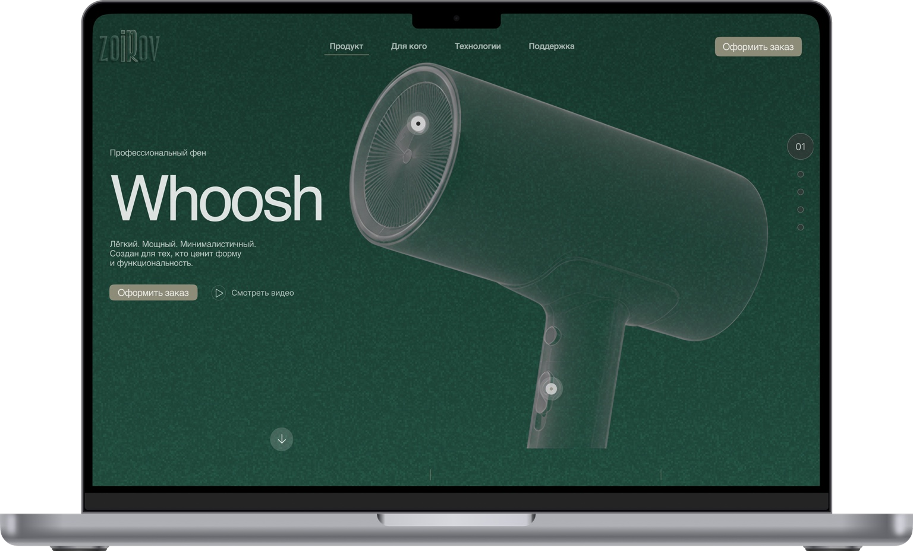
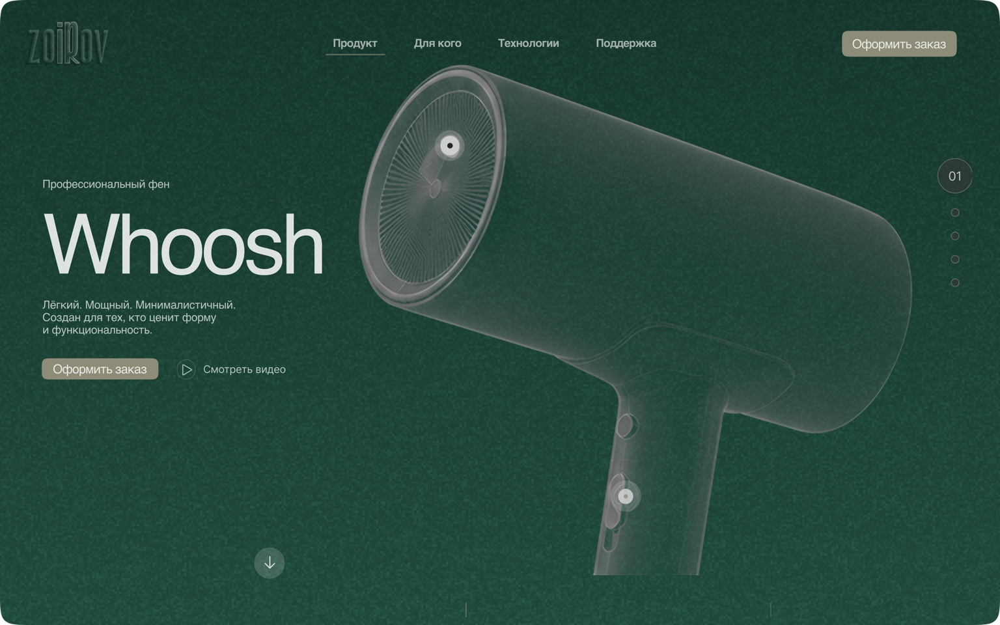
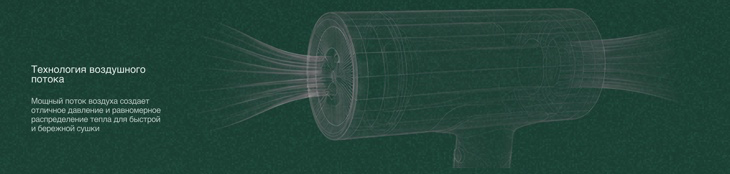
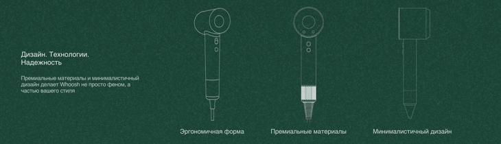
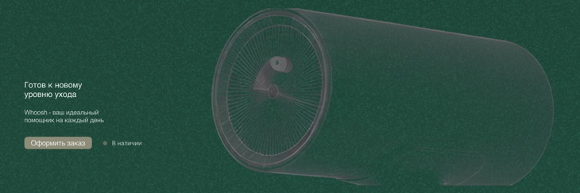

08 / ПРОДУКТОВЫЙ ЛЕНДИНГ · UX/UI
Whoosh.
Десктопный лендинг профессионального фена. Крупный рендер знакомит с устройством, а схема воздушного потока, конструкция и характеристики помогают оценить его перед заказом.

Задача и сценарий
От первого взгляда к решению о покупке
Покупатель может оценить форму фена с первого взгляда. Для решения ему нужны ответы на другие вопросы: удобно ли держать устройство, какие у него режимы и где найти условия заказа. Страница отвечает на них по мере прокрутки.
Узнать устройство
Категория, название и крупный рендер собраны на первом экране. Рядом два входа: сразу перейти к заказу или посмотреть видео.
Разобраться в деталях
Дальше раскрываются поток воздуха, режимы и конструкция. Параметры собраны в строку, чтобы быстро найти нужное значение.
Перейти к заказу
Финальная кнопка возвращает к действию после изучения продукта. Цена, доставка и состав комплекта пригодились бы рядом с ней.
Разбор первого экрана
Две точки внимания на рендере
На исходном макете отмечены передняя часть корпуса и ручка. Выберите точку, чтобы увидеть, какой вопрос покупателя может раскрывать каждая из них.

Передняя часть корпуса
Как распределяется поток воздуха?
Следующий раздел макета показывает траекторию потока. Если подобрать к метке короткую подпись, она станет переходом от крупного рендера к объяснению технологии.
Ручка и управление
Где переключать режимы во время сушки?
Рендер показывает кнопки на ручке. Крупный план с подписями помог бы понять, какой кнопкой меняется режим и удобно ли до неё дотянуться.

Возможности и форма
Как визуалы помогают разобраться в устройстве
Схема потока показывает принцип работы, а три ракурса дают представление о корпусе и ручке. Отдельная строка характеристик помогает быстро сверить параметры.


Схема воздушного потока
Линии вокруг корпуса показывают направление движения воздуха.


Корпус в трёх ракурсах
Контурные виды показывают форму ручки, элементы управления и пропорции корпуса.
Характеристики в макете
- Мощность
- 1600 Вт
- Скорость воздуха
- 22 м/с
- Температурные режимы
- 3
- Вес
- 320 г
- Уровень шума
- 75 дБ
Скорость воздуха описывает поток, а мощность — потребление. Для сравнения моделей важно указать режим и условия измерения, особенно для скорости потока и шума.


Финальный экран заказа
Кнопка заказа снова видна после разделов о технологии и конструкции.
Результат и следующий шаг
Что должно быть понятно перед заказом
Десктопный макет связывает рендер, объяснение технологии и параметры с кнопкой заказа. В прототипе заказа стоит проверить две задачи: найти нужную характеристику и понять, что произойдёт после нажатия кнопки.